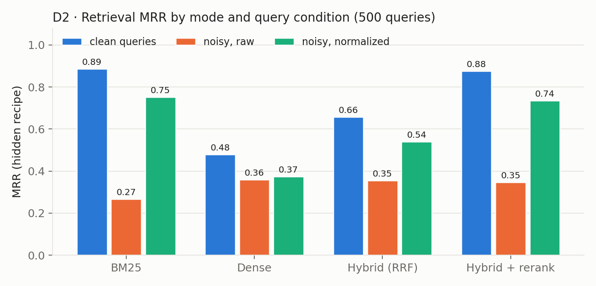

Recipe recommendation from a pantry is a retrieval problem with hard constraints. The user knows the ingredients they have, often in regional or informal words (“dahi”, “jeera”, “capsicum”), and may have dietary and time limits. Search engines match words in titles, not pantry coverage, and general-purpose LLMs produce fluent recipes with no source, frequently omitting ingredients the user would have to buy. Retrieval-augmented generation (RAG) [1] addresses this by restricting the model to retrieved documents. Our aim was to apply RAG to recipes in a way that is checkable: every answer cites a recipe ID, lists what is missing and suggests substitutes, and every claim can be traced back to a recipe in the corpus.
Our contributions follow the four proposal deliverables: an ingredient normalization pipeline with a hand-labelled evaluation (D1); a hybrid retriever with an ablation of BM25, dense and fused retrieval (D2); citation-grounded generation with substitutions compared against a plain-LLM baseline (D3); and a multi-turn demo with a faithfulness evaluation (D4).
RecipeDB. We implemented a client for RecipeDB 2.0 [2] through the Foodoscope API. The search-recipe/{id} endpoint returns metadata, steps and every ingredient (canonical name and raw phrase) in one call. However, each API key’s token balance was exhausted after about 200 calls, which was enough to list ~2,000 recipe IDs but not to download them. We also found that RecipeDB’s diet flags were 0 even for clearly vegetarian dishes such as Palak Paneer, so we derive diet labels from ingredients ourselves.
Evaluation corpus. Following the proposal’s fallback route, all results use 10,000 BBC Good Food recipes scraped by our group (ingredient phrases, steps, cuisine, servings, prep time), converted into the same schema as RecipeDB. Ingredient names come from the NER labels produced in the course assignment. After removing recipes with fewer than three ingredients or no steps and exact duplicates, the corpus has 9,878 recipes and about 9,700 ingredient types. A polite scraper that respects robots.txt (12-second crawl delay) can enrich recipes with total time, calories and the site’s diet tags from the pages’ schema.org data. Switching the whole system to RecipeDB is one command once an API key has credit.
The parser first extracts constraints with regular expressions: diet (vegan, eggless, vegetarian, pescatarian, dairy-free), time (“under 30 minutes”, “in 1 hour”, “quick” = 30 min), calories, cuisine and exclusions (“no X”, “without X”, “allergic to X”). The remaining text is split on commas, “and” and similar words, lead-ins such as “I have” are removed, and each chunk is normalized to the corpus vocabulary in five stages: (1) cleaning of quantities, units, prep words and accents; (2) singularisation; (3) a hand-built synonym map of about 230 entries covering Hindi/Hinglish (jeera, haldi, palak, dahi, atta, besan, rajma), British and US names (courgette, double cream, minced beef); (4) exact vocabulary match; (5) fuzzy matching (RapidFuzz, score ≥ 86, ties broken by corpus frequency) with a head-noun backoff. Diet classes (meat, seafood, egg, dairy, honey) come from a lexicon applied to each ingredient, after masking plant phrases that contain an animal word (“coconut milk”, “peanut butter”, “vegetable stock”).
BM25 [5] indexes each recipe’s ingredients as tokens, with each multi-word ingredient contributing a joined token and its head noun (red_lentil, lentil). Dense retrieval embeds each recipe with the all-MiniLM-L6-v2 sentence encoder and scores by inner product of L2-normalised vectors (equivalent to a FAISS flat index). Document format mattered: embedding the ingredient list alone, in the same format as the query, raised dense MRR from 0.26 to 0.48 compared with “title + cuisine + ingredients”. The two ranked lists (top 100 each) are fused with Reciprocal Rank Fusion [3], score(d) = Σ 1/(60 + rank). Hard filters for diet, time, calories, cuisine and exclusions are applied as a mask before ranking, so every result satisfies them. Finally a coverage reranker scores each candidate as
s = (1 − wc − wu) · RRF/max RRF + wc · coverage + wu · pantry-use − λ · |missing|,
where coverage is the share of the recipe’s non-staple ingredients the user has and pantry-use is the share of the user’s items the recipe uses. Staples (salt, water, oil, pepper, sugar) count as available, and variety modifiers are treated as the same item (basmati rice ≈ rice) while different foods are not (coconut milk ≠ milk). The weights (wc = 0.4, wu = 0.4, λ = 0) were chosen by grid search on 200 dev queries kept separate from the test queries.
The top three recipes are given to the LLM with their ID, steps, the ingredients the user has, the missing ingredients, and candidate substitutes. The system prompt requires the model to recommend only retrieved recipes, cite them as [R<id>], take steps only from the cited recipe and list the missing items. After generation, any cited ID that was not retrieved is removed and visibly flagged. The generator is a local open model (Qwen2.5-1.5B-Instruct, greedy decoding); an API LLM backend and an extractive no-LLM mode are also available. Substitutions come from a curated table of about 90 ingredients with ratios and notes, with a corpus-based fallback: candidates with a similar recipe context (cosine of PPMI co-occurrence vectors) and a similar kind of food (cosine of name embeddings) that rarely occur together with the missing item. Substitutes that break the user’s diet are removed and items already in the pantry are preferred.
A Streamlit app keeps the pantry and constraints as dialogue state, so users can add or remove ingredients (“I also have peas”, “I don’t have spinach”), change constraints (“make it vegan”, “no garlic”), pick a result (“show me the second one”), ask for substitutes (“instead of curry powder?”) or start a new pantry. The sidebar shows how the message was understood, and an evidence panel shows each retrieved recipe’s BM25 and dense ranks, coverage and missing items.
| Stage (cumulative) | Accuracy |
|---|---|
| Exact match only | 4.5% |
| + cleaning | 21.8% |
| + singularisation | 39.7% |
| + synonym map | 75.6% |
| + fuzzy matching (full) | 91.0% |
| Full, without synonym map | 62.8% |
Table 1. Accuracy on 160 hand-labelled surface forms (90 recipe phrases, 70 user terms).
We hand-labelled 160 surface forms: 90 real recipe phrases (“2 x 400g cans cherry tomatoes”) and 70 user-style terms including Hindi and British names and misspellings. Each stage adds accuracy; the synonym map gives the largest jump, and without it accuracy on user terms falls from 90.7% to 46.5%. On 25 full pantry messages with gold ingredients and constraints, the parser reaches ingredient precision 0.96, recall 0.95 (F1 0.95) and constraint-field accuracy 0.99. On 68 gold recipe phrases, the assignment’s NER ingredient names (95.6%) beat a rule-based phrase extractor we tried (88.2%), so the corpus keeps the NER names.
Following the proposal, we sampled a recipe, hid it, and used 3–5 of its non-staple ingredients as the pantry; a query succeeds if the hidden recipe is retrieved. We report Recall@k, MRR, and the user-facing quality of the top 5 (average pantry coverage) on 500 test queries.
| Method | R@1 | R@5 | R@10 | MRR | Top-5 coverage | Top-5 missing |
|---|---|---|---|---|---|---|
| BM25 | 0.85 | 0.94 | 0.96 | 0.89 | 34% | 5.5 |
| Dense (MiniLM) | 0.40 | 0.57 | 0.62 | 0.48 | 30% | 4.5 |
| Hybrid (RRF) | 0.58 | 0.75 | 0.80 | 0.66 | 34% | 4.7 |
| Hybrid + coverage rerank | 0.83 | 0.94 | 0.97 | 0.88 | 41% | 4.8 |
Table 2. Retrieval on 500 synthetic hidden-recipe queries (rerank weights tuned on 200 separate dev queries).
On these clean queries BM25 is very strong, because the query terms are exact ingredient names from the hidden recipe, and plain RRF fusion is worse than BM25 since the weaker dense list pulls the fused ranking down. The coverage reranker restores BM25-level recall (R@5 0.94, R@10 0.97) while returning recipes that use more of the user’s pantry (coverage 34% → 41%, missing items 5.5 → 4.8). Hard filters matter: without them, 55% of top-10 results break the query’s diet or time rule; with them, none do.
Noisy pantry text. Real users do not type canonical names, so we rewrote the same 500 queries the way people type (regional synonyms, plurals, typos, quantities: “makhan”, “tomaot puree”, “a handful of clam, diced”) and retrieved either with the raw strings or after D1 normalization (Figure 1). On raw noisy text, dense retrieval outperforms BM25 (MRR 0.36 vs 0.27), which is the case for hybrid retrieval. After normalization, BM25’s Recall@5 rises from 0.31 to 0.82 and the full reranked system reaches 0.85 (from 0.45 raw), close to its clean-query performance.

We asked 15 pantry questions (from our gold set plus synthetic pantries) to PantryRAG and to the same Qwen2.5-1.5B model without retrieval. For each answer we extract mentioned ingredients and steps and check them against a reference recipe: the cited one for PantryRAG and, generously, the corpus recipe that best matches the plain model’s ingredients. A step is grounded if at least 50% of its content words appear in one step of the reference. To validate the metric, the extractive generator (which copies its recipe) scores 0.98 on ingredients and 0.99 on steps.
| Metric (15 queries) | PantryRAG | Plain LLM |
|---|---|---|
| Steps grounded in a real recipe | 92% | 19% |
| Ingredients grounded (plain scored against its best-matching recipe) | 89% | 89% |
| Ingredients used but not disclosed as missing (per answer) | 1.07 | 0.93 |
| Answers with a valid recipe-ID citation | 100% | – |
| Diet violations | 0 | 0 |
Table 3. Faithfulness of answers from the same model with and without retrieval.
PantryRAG’s steps are almost always backed by a real recipe (92% vs 19%), and every answer carries a valid citation; the citation check removed 7 IDs that the small model wrote incorrectly. Ingredient grounding is equal only because we credited the plain model with its best-matching corpus recipe. Missing-ingredient disclosure did not improve: the 1.5B model sometimes drops items from the missing list it is given, whereas the extractive mode always shows the full list. A qualitative example illustrates the difference: for the paneer pantry, the plain model invented a “Paneer Tikka Masala” with five generic steps and claimed nothing was missing, while PantryRAG recommended a cited recipe [Rbbc8708], listed butter, egg, dill and nutmeg as missing, and reproduced its ten steps.
Human evaluation. We built a blinded A/B evaluation tool (make_human_eval.py) that randomises answer order and collects 1–5 ratings for relevance, feasibility and correctness plus an overall preference. Ratings had not yet been collected at the time of writing; this is noted as a limitation below.
PantryRAG turns an informal pantry description into cited, checkable recipe suggestions with missing-ingredient lists and substitutions. The evaluation shows that ingredient normalization is essential for real pantry text, that hybrid retrieval only pays off with coverage-aware reranking, and that restricting generation to retrieved recipes makes 92% of generated steps verifiable against 19% without retrieval. Next steps are to run the pipeline on the full RecipeDB corpus, add nutrition goals using USDA data, collect human ratings, and use a larger generator.
Aditya Kantiwal led D1 (data pipeline, normalization, diet labels) and D4 (evaluation, demo interface). Sahitya led D2 (hybrid retrieval and reranking) and D3 (grounded generation and substitutions). Both members contributed to the evaluation, report and presentation.